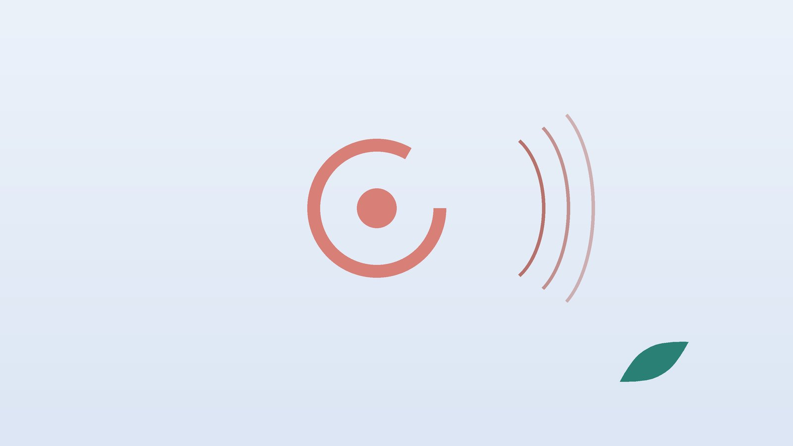

갑자기 세상이 빙빙 돌고 며칠 동안 어지럽다면, 전정신경염 한방 관리

나의 어지럼, 이런 모습인가요?
- 어느 날 갑자기 주변이 한 방향으로 계속 도는 느낌이 시작됐다
- 가만히 누워 있어도 어지럼이 몇 시간이 아니라 하루 넘게 이어진다
- 속이 메스꺼워 여러 번 토했다
- 귀가 먹먹하거나 소리가 작게 들리지는 않는다
- 며칠 전 감기 기운이 있었다
- 돌던 느낌은 줄었지만 고개를 빨리 돌리거나 어두운 길을 걸을 때 휘청거린다
이 체크리스트는 진단 도구가 아닙니다. 처음 생긴 심한 어지럼은 이비인후과나 신경과에서 원인을 먼저 확인하세요.
어지럼과 함께 오면 바로 119를 불러야 하는 신호
- 말이 어눌해지거나 남의 말을 알아듣기 어렵다
- 얼굴 한쪽이 처지거나 한쪽 팔다리에 힘이 빠지고 감각이 둔하다
- 부축해도 혼자 서거나 걷지 못하고 한쪽으로 쓰러진다
- 지금까지 겪지 못한 심한 두통이나 뒷목 통증이 함께 왔다
- 물체가 두 개로 겹쳐 보이거나 삼키기 어렵다
뇌줄기나 소뇌에 생긴 뇌졸중은 처음에는 어지럼과 구토만으로 나타나 전정신경염과 헷갈릴 수 있습니다. 위 신호가 하나라도 있으면 기다리지 말고 즉시 119를 부르세요. 고혈압·당뇨·심방세동이 있는 어르신은 신호가 뚜렷하지 않아도 응급실 확인이 안전합니다.
전정신경염은 왜 생기고, 다른 어지럼과 무엇이 다른가요?
안쪽 귀의 전정기관은 머리가 기울고 도는 움직임을 감지해 전정신경으로 뇌에 알립니다. 한쪽 신경이 갑자기 신호를 제대로 보내지 못하면 양쪽 정보가 어긋나 뇌는 몸이 돈다고 착각합니다. 잠복한 바이러스가 다시 활동해 염증을 일으킨다는 추정이 많지만 확실히 밝혀지지는 않았습니다.
- 이석증: 누울 때, 돌아누울 때처럼 머리 위치를 바꾸면 1분 이내로 짧게 돌고 멈춥니다. 전정신경염은 자세와 상관없이 계속 돕니다.
- 메니에르병: 20분에서 몇 시간 가는 어지럼이 되풀이되고, 귀 울림·먹먹함·청력 저하가 함께 옵니다.
- 미로염: 전정신경염과 비슷하지만 청력까지 떨어집니다.
- 뇌졸중: 위의 신경 증상이 동반되거나, 진찰에서 눈 떨림 방향과 머리 충동 검사 결과가 말초 원인과 다르게 나옵니다.
병원에서는 눈동자 떨림(안진)과 머리 충동 검사 등으로 진단하고, 뇌졸중이 의심되면 MRI를 찍습니다. 증상 초기에 스테로이드를 쓸지는 진찰한 의사가 판단합니다.
한의학은 전정신경염을 어떻게 보나요?
한의학에서는 눈앞이 아찔한 것을 현(眩), 머리가 도는 것을 훈(暈)이라 하여 둘을 합쳐 현훈(眩暈)이라 불렀습니다. 원나라 주단계는 '담이 없으면 어지럼이 생기지 않는다(無痰則不作眩)'고 하여 몸속에 고인 탁한 수분을 중시했고, 명나라 장경악은 『경악전서』에서 '허하지 않으면 어지럼이 생기지 않는다(無虛不能作眩)'고 하여 기혈이 바닥난 상태를 강조했습니다.
갑자기 시작한 시기에는 담음을 걷는 치료를, 오래 흔들리는 시기에는 지친 기혈을 채우는 치료를 더 무겁게 둡니다.
나의 어지럼은 어떤 유형일까?
이비인후과·신경과에서 진단을 받은 뒤 회복을 돕기 위해 쓰는 한의학적 구분입니다.
1. 담음(痰飮) 울렁거림이 큰 유형
- 이런 분에게 많아요
- 평소 위장이 약하고 몸이 잘 붓는 분
- 나타나는 모습
- 머리가 무겁게 싸인 듯하고 메스꺼움과 구토가 두드러진다
- 함께 오는 몸의 신호
- 가래, 식욕 저하, 명치 답답함
- 진찰에서 보이는 모습
- 혀가 두툼하고 끈적한 백태가 낌
- 치료 방향
- 고인 담음을 걷고 위장을 편하게 하는 방향 (반하백출천마탕 계열)
- 오늘부터 해 볼 것
- 속이 울렁일 때는 기름진 음식을 피하고 미음처럼 묽은 음식을 조금씩 드세요.
2. 간양상항(肝陽上亢) 열이 머리로 오르는 유형
- 이런 분에게 많아요
- 예민하고 혈압 관리가 필요한 분
- 나타나는 모습
- 얼굴이 달아오르고 화가 나면 어지럼이 심해진다
- 함께 오는 몸의 신호
- 뒷목 뻣뻣함, 두통, 잠이 얕음
- 진찰에서 보이는 모습
- 혀끝이 붉고 맥이 팽팽함
- 치료 방향
- 치솟는 기운을 내리고 머리를 맑게 하는 방향 (천마구등음 계열)
- 오늘부터 해 볼 것
- 혈압을 매일 같은 시간에 재서 기록해 오세요.
3. 기혈부족(氣血不足) 오래 흔들리는 유형
- 이런 분에게 많아요
- 급성기가 지났는데도 몇 주째 휘청거리는 분, 회복이 더딘 어르신
- 나타나는 모습
- 일어설 때나 피곤할 때 더 흔들리고 쉬면 조금 낫다
- 함께 오는 몸의 신호
- 쉽게 지침, 얼굴이 창백함, 손발 저림
- 진찰에서 보이는 모습
- 혀가 옅은 색이고 맥이 가늘고 힘이 없음
- 치료 방향
- 기운과 혈을 채워 회복력을 받쳐 주는 방향 (귀비탕·보중익기탕 계열)
- 오늘부터 해 볼 것
- 하루 세끼를 거르지 말고, 짧게 자주 걷는 시간을 늘려 보세요.
한의원에서는 어떻게 진찰하나요?
- 진단 결과 확인: 병원에서 받은 검사 결과와 처방을 확인하고, 아직 진단 전이면 이비인후과나 신경과 진료를 먼저 안내합니다.
- 어지럼의 경과: 언제 시작해 얼마나 이어졌는지, 지금은 어떤 움직임에서 흔들리는지 여쭙습니다.
- 걸음과 균형: 눈을 뜨고 감은 채 서 있을 때, 일자로 걸을 때 한쪽으로 쏠리는지 봅니다.
- 자율신경 검사와 맥·혀: 긴장과 피로가 회복을 늦추는지 자율신경 검사로 살피고, 혈압과 복용 약도 확인합니다.
침·약침·한약 치료는 어떻게 하나요?
1. 침 치료
구토가 심한 첫 며칠은 병원 치료가 먼저이고, 걸을 수 있게 되면 침 치료를 시작합니다.
- 풍지(風池): 뒤통수 아래 머리카락 경계에서 목 양옆 굵은 근육 바깥쪽 오목한 곳입니다.
- 백회(百會): 양쪽 귀 끝을 머리 위로 이은 선과 코에서 올라온 정중선이 만나는 정수리입니다.
- 내관(內關): 손목 안쪽 주름에서 팔꿈치 쪽으로 손가락 세 개 너비, 두 힘줄 사이입니다. 울렁거림에 씁니다.
- 족삼리(足三里): 무릎뼈 바깥 아래 오목한 곳에서 손가락 네 개 너비만큼 내려간 정강이뼈 바깥쪽입니다.
2. 약침
어지럼을 버티느라 굳은 뒷목과 어깨에 약침을 시행합니다. 임신 중에도 주수와 상태를 확인한 뒤 피해야 할 부위를 제외하고 시행합니다.
3. 한약
유형에 맞춰 탕약 위주로 처방하며, 울렁거림이 큰 시기에는 조금씩 나누어 드시게 합니다. 복용 중인 약은 알려 주시면 확인해 처방하고, 혈압약·항응고제 같은 처방약은 담당 의사와 상의 없이 끊지 마세요. 임신 중이거나 신장·간 기능이 떨어져 있다면 진료 때 꼭 알려 주세요. 확인 후 안전한 약재로 처방합니다. 한약은 원장이 원내 탕전실에서 약재 선별부터 달이는 과정까지 직접 관리하며, 10일분씩 처방해 복용 경과를 보고 약재 구성과 양을 조절합니다.
원장님이 네이버 블로그에 진료 이야기와 건강 정보를 꾸준히 올리고 있습니다. 더 많은 이야기는 블로그에서 확인해 보세요.
블로그 보기회복은 어떤 단계를 거치나요?
- 급성기 (첫 며칠) 병원 진단과 치료를 받고, 구토가 심하면 수액과 진토제로 버팁니다.
- 아급성기 (1~2주) 침과 한약을 시작하고, 가벼운 눈·머리 운동으로 뇌의 적응을 돕습니다.
- 회복기 (2주 이후) 걷기와 균형 운동 비중을 늘리고, 남은 흔들림과 피로를 관리합니다.
- 점검 몇 달이 지나도 흔들림이 남으면 전정 기능 검사를 다시 받아 봅니다.
돌던 느낌은 대개 며칠 안에 줄지만, 균형이 돌아오는 속도는 나이와 몸 상태에 따라 다릅니다.
집에서 하는 전정재활운동과 생활 관리
- 시선 고정 운동: 팔을 뻗어 엄지를 세우고 글자를 바라본 채 고개만 좌우로 천천히 30초 흔듭니다. 위아래도 같은 방법으로 하루 서너 번 하세요.
- 눕지만 말기: 어지럽다고 계속 누워 있으면 뇌가 새 균형에 적응하는 속도가 느려집니다. 안전한 곳에서 조금씩 걸어 보세요.
- 넘어짐 대비: 밤에는 복도에 작은 불을 켜 두세요.
- 멀미약은 짧게: 어지럼을 누르는 약은 처음 며칠만 쓰고, 오래 쓸지는 처방한 의사와 이야기하세요.
- 귀 뒤 지압: 풍지혈을 양 엄지로 5초씩 지그시 누르기를 열 번 반복해 뒷목 긴장을 풀어 주세요.
다른 진료가 함께 필요한 경우
- 청력이 떨어지거나 귀가 울리면 이비인후과에서 청력 검사를 받으세요.
- 어지럼이 몇 주 뒤 다시 짧게 도는 양상으로 바뀌면 전정신경염 뒤에 생기는 이석증일 수 있어 이비인후과에서 확인하세요.
- 석 달 넘게 흔들리고 불안해 외출을 피하게 되면 지속성 체위-지각 어지럼일 수 있어 전문 진료를 함께 받으세요.
자주 묻는 질문 Q&A
- Q1. 전정신경염은 다시 생기나요?
- 같은 쪽에 다시 생기는 경우는 드문 편이지만, 남은 흔들림이 오래가는 분은 있습니다.
- Q2. 어지러운데 운동을 해도 되나요?
- 급성기가 지나면 오히려 움직여야 회복이 빨라집니다. 넘어지지 않게 벽 옆에서 시작하세요.
- Q3. 이석증과 어떻게 구분하나요?
- 이석증은 자세를 바꿀 때 짧게 돌고, 전정신경염은 가만히 있어도 하루 넘게 계속 돕니다.
- Q4. 스테로이드를 꼭 먹어야 하나요?
- 초기에 쓰면 전정 기능 회복에 도움이 된다는 연구가 있지만, 쓸지 말지는 진찰한 의사가 판단합니다.
- Q5. 귀가 안 들리는데 전정신경염인가요?
- 청력이 떨어지면 미로염이나 돌발성 난청일 수 있어 바로 이비인후과에 가세요.
- Q6. 운전은 언제부터 할 수 있나요?
- 고개를 빠르게 돌려도 흔들림이 없을 때까지는 운전을 미루세요.
- Q7. 병원에서 받은 어지럼 약과 한약을 함께 먹어도 되나요?
- 대부분 함께 드셔도 됩니다. 어떤 약인지 알려 주시면 확인해 처방합니다.
- Q8. 어지러울 때 스스로 눌러 볼 곳이 있나요?
- 울렁거릴 때 내관혈을 지그시 눌러 보세요. 말이 어눌하거나 팔다리에 힘이 빠지면 바로 119를 부르세요.
문원열 대표원장한의사 · 365스마일한의원
임상 경력 15년, 인천 서구 가정동에서 개원 후 10년째 진료하고 있으며, FCST 턱관절학회·연부조직학회·침도학회 등에서 활동합니다. 아픈 곳만이 아니라 증상의 원인을 찾아 진료합니다.
진료 안내
- 진료시간
- 평일 09:00~20:00 (점심시간 13:00~14:00, 접수 마감 19:30)
토·일·공휴일 09:00~15:00 (접수 마감 14:30) - 주소
- 인천광역시 서구 가경주로 46, 2층 (가정동)
인천2호선 가정중앙시장역 인근
영상으로 길 안내 보기 → - 주차
- 한의원 건물 바로 앞 1층 도원주차장
- 예약
- 예약 바로가기 또는 전화 예약
진료시간은 사정에 따라 바뀔 수 있으니 방문 전 전화로 확인해 주세요.
함께 읽으면 좋은 칼럼
건강 칼럼 전체 보기 →


참고 자료
- Strupp M, et al. Methylprednisolone, valacyclovir, or the combination for vestibular neuritis. N Engl J Med, 2004
- Kattah JC, et al. HINTS to diagnose stroke in the acute vestibular syndrome. Stroke, 2009
- Hall CD, et al. Vestibular Rehabilitation for Peripheral Vestibular Hypofunction: An Updated Clinical Practice Guideline. J Neurol Phys Ther, 2022
- 장개빈(張景岳), 『경악전서(景岳全書)』 현운(眩運)
- 질병관리청 국가건강정보포털 — 원문
※ 이 글은 일반적인 건강 정보이며, 개인의 상태에 따라 치료 방법과 결과는 다를 수 있습니다. 정확한 진단과 치료는 진료를 통해 결정됩니다. 침·약침 시술 후 드물게 멍, 통증 등이 생길 수 있습니다.